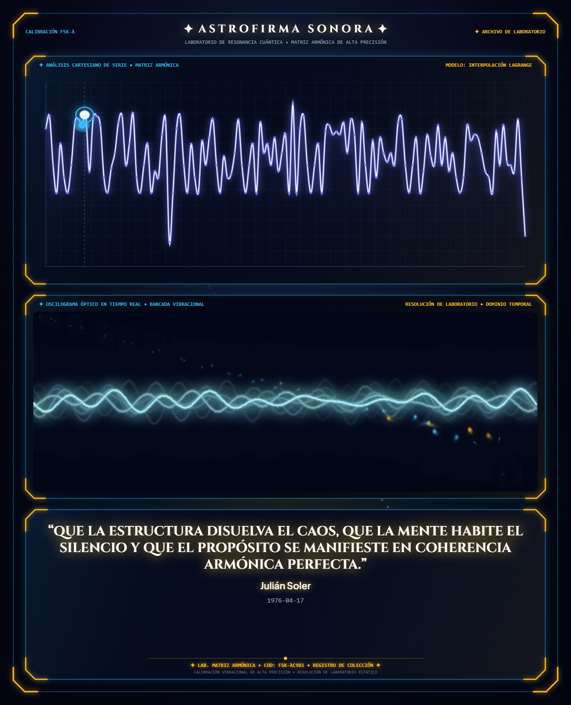

Una traducción acústica rigurosa donde las coordenadas temporales y el lenguaje consciente se unifican mediante proporciones armónicas.
No existen dos seres humanos bajo las mismas coordenadas cósmicas ni con el mismo peso de intención. Aunque dos personas compartan exactamente el mismo decreto, su firma sonora será completamente irrepetible.
Cómo la fascinación por los patrones invisibles del sonido dio origen a este proyecto.
La inquietud detrás de Astrofirma Sonora comenzó observando un experimento clásico de cimática: una placa metálica espolvoreada con arena fina sometida a distintas frecuencias audibles.
El sonido es física; su diferenciación personal responde a leyes de oscilación y modulación espectral.
Simulación en vivo: Modulación de Fase Armónica Φ (7.83 Hz portadora)
La fecha de nacimiento determina el ciclo fundamental de la pieza. Actúa como el reloj portador que sincroniza las frecuencias base con los ritmos electromagnéticos de fondo.
Cada consonante y vocal de tu nombre introduce variaciones de fase y microafinación específica.
El propósito consciente define los tiempos de respuesta, la caída armónica y la amplitud dinámica.
Muestras no personalizadas construidas con decretos arquetípicos universales.
Estructura gravitatoria suave orientada a despejar la sobreestimulación cotidiana y favorecer el descanso mental al finalizar el día.
Distribución de ondas de baja fatiga diseñadas para generar un telón de fondo limpio durante horas de trabajo o lectura.
Ondulaciones lentas calculadas en proporciones doradas que invitan a la pausa atenta y el reajuste interior.
La experiencia acústica esencial con tu carátula gráfica personalizada y la Ficha Matricial Básica de laboratorio.

Pista sonora masterizada sin compresión con afinación geométrica y modulación microtonal individual.
Imagen analítica de alta definición con el oscilograma en dominio temporal y el análisis cartesiano de tu decreto.
Resumen ejecutivo de laboratorio con el código de serie, la frecuencia portadora y los parámetros de anclaje.
Elige el paquete que mejor se adapte a tus requerimientos de exploración acústica.
Audio máster, carátula HD y Ficha Matricial Básica.
Todo lo estándar + Memoria Técnica PDF y Video Cinemático.